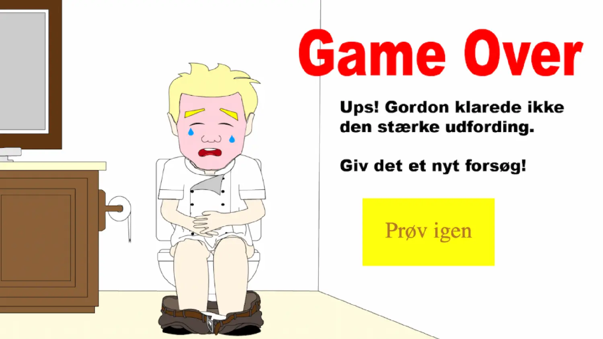
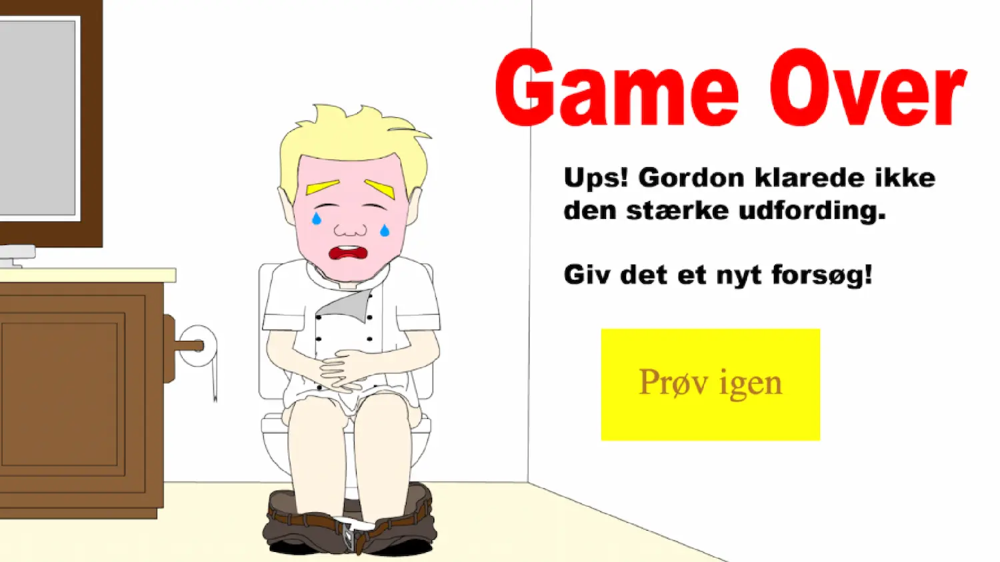
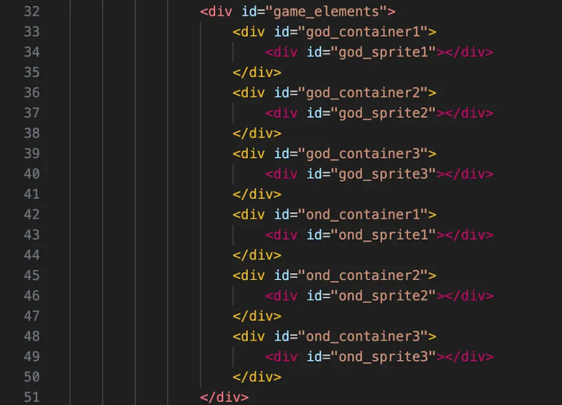

Grundlæggende animation
Formålet med Tema 4 var, at vi som studerende skulle introduceres til JavaScript og dermed kunne kode dynamiske websites. For at lære dette skulle vi udvikle et spil, hvor vi sammen med JavaScript brugte CSS-animationer til at kode spillet. Til at designe spillet lærte jeg desuden at bruge Adobe Illustrator til at tegne UI-elementer, figurelementer og baggrundsdesign.
 

Idégenerering
Det første, vi skulle gøre i udviklingen af vores spil, var at lave idégenerering. Under denne proces fandt jeg frem til, at jeg ville lave et spil om Gordon Ramsay, hvor brugeren kunne trykke på en pastaret eller en chili for henholdsvis at vinde eller tabe spillet. Vi skulle også vælge et stiludgangspunkt, hvor jeg blev inspireret af South Park og lavede mit spil uden for mange detaljer og med et fladt design. Dernæst lavede jeg papirsprototyper af de forskellige spilskærme og spil- og figurelementer. Herunder ses den prototype, jeg tegnede af min vinderskærm.
Illustrator
Under Tema 4 lærte jeg også at bruge Illustrator til at tegne baggrunde samt spil- og figurelementer. Jeg fik her kompetencer i at bruge de værktøjer, der er nyttige, når man skal tegne i Illustrator. Blandt andet brugte jeg Pen Tool i en stor del af designet. Her fandt jeg et billede, som havde en stil, der passede godt til min idé, hvorefter jeg kunne tegne over det. Shape Builder Tool var et andet værktøj, jeg anvendte i udviklingen af mit spil, som fx på mine liv-animationer, der er bygget op af to cirkler og en trekant.
Aktivitetsdiagrammer
Aktivitetsdiagrammer arbejdede jeg også med for at opbygge handlingsforløbet i mit spil. Herigennem lærte jeg de forskellige elementer, der beskriver noget i et aktivitetsdiagram, herunder start, handling, beslutning og slut. Derudover arbejdede jeg også med gentagelser, parallelle forløb og signaler, som det fremgår af aktivitetsdiagrammet herunder.
State machine-diagram
Inden jeg begyndte at kode, skulle jeg lave et state machine-diagram, som skulle fungere som en planlægning for kodningen af mit spil. Jeg brugte state machine-diagrammet som grundlag for min kodning, hvilket gav mig et klart overblik over, hvor mange funktioner der skulle implementeres, samt hvordan de var forbundet. På den måde kunne jeg kode, hvilke events der forbinder funktionerne. Jeg navngav desuden funktionerne i min kode ens med state machine-diagrammet.
Container og Sprite
I selve kodningen af mit spil lærte jeg først og fremmest om begreberne “Container” og “Sprite”. Disse skulle jeg bruge i mit spil for at få spilelementerne til at bevæge sig på skærmen, men også for at tilføje effekter som rotation eller rysten. Herunder ses, hvordan jeg har bygget det op i min HTML.
CSS-positionering
CSS-positionering var en anden metode, jeg lærte at bruge. Den skulle jeg anvende for at placere mine spilelementer og UI-elementer oven på min baggrundsskærm. I eksemplet herunder kan man se, hvordan jeg har brugt position: relative; og position: absolute; til at positionere mine spilelementer og min startknap oven på min #screen.
CSS-animationer
For at få mine spilelementer til at bevæge sig og lave effekter skulle jeg lære at lave CSS-animationer. Her brugte jeg keyframes i min CSS og oprettede forskellige animationer til dem. Herunder er et eksempel på en keyframe, hvor jeg lavede en forsvind-animation på mit gode spilelement. Jeg brugte rotate til at få det til at rotere og scale til at få det til gradvist at blive mindre, indtil det til sidst forsvandt.
JavaScript
I dette forløb lærte jeg også at kode i programmeringssproget JavaScript. Her lærte jeg, hvordan jeg kunne manipulere med DOM’en, altså det, jeg havde skrevet i min HTML til mit spil. Måden jeg greb det an på, var ved først at oprette en funktion i min JavaScript. Inde i funktionen lavede jeg en querySelector, hvor jeg refererede til det fra min HTML, som jeg ville manipulere med. Efterfølgende kunne jeg tilføje eller fjerne classes og skrive en CSS-animation ind. Herunder er et eksempel fra min JavaScript, hvor jeg har tilføjet en animation, der skjuler siderne fra min HTML, og en EventListener, der starter den næste funktion.
Variabler
En anden ting, jeg lærte i JavaScript, og som var væsentlig for mit spil, var at oprette variabler. Jeg skulle oprette point, liv og speed som variabler, og det gjorde jeg ved at bruge let. Derefter kunne jeg nulstille dem alle i min StartSpil-funktion. Senere kunne jeg bruge mine variabler sammen med if-else-udsagn til at diktere, hvad der skulle ske, hvis brugeren trykkede på pastaretten eller chilien. Herunder er et eksempel fra funktionen StopSpillet, hvor brugeren enten har 0 liv tilbage, har nået de 15 point, eller har under 15 point. Afhængigt af det givne udfald refererede jeg til en specifik funktion.
Bæredygtigt webdesign
Noget andet, jeg arbejdede med, og som jeg kommer til at arbejde med fremover, var bæredygtigt webdesign. Jeg gjorde dette ved at oprette konstanter for mine document.querySelectors. På den måde kunne jeg referere til dem med få bogstaver, hver gang jeg skulle bruge dem, hvilket sparede på hukommelse og CPU-kraft. Dette gjorde min JavaScript mere bæredygtig, da jeg reducerede energiforbruget og dermed også CO2-udledningen.